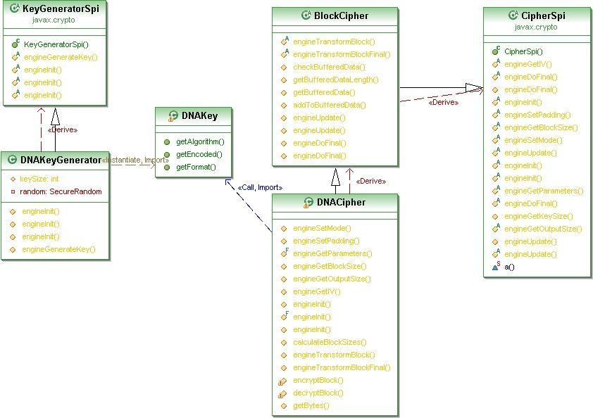
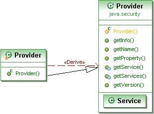
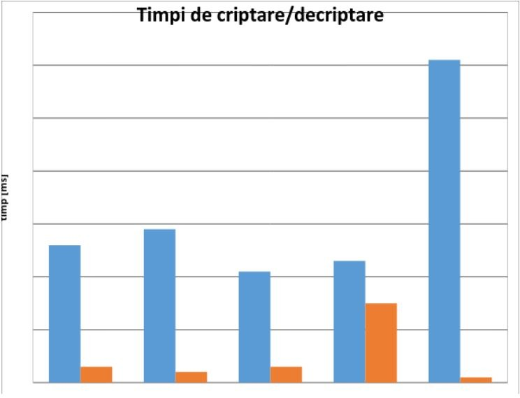
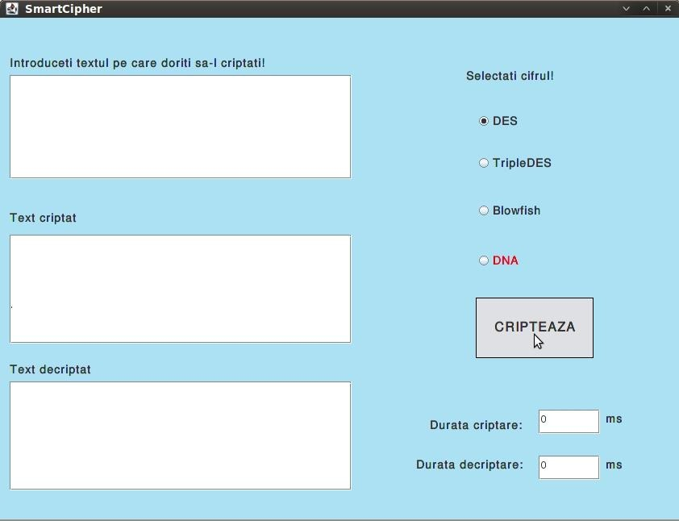
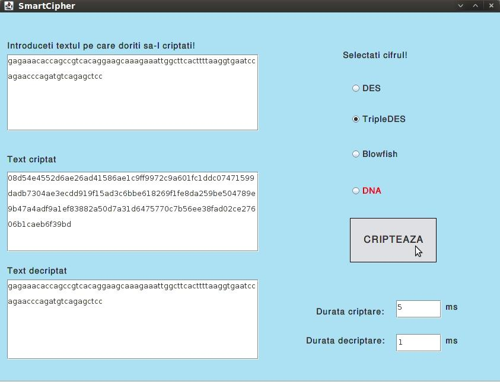
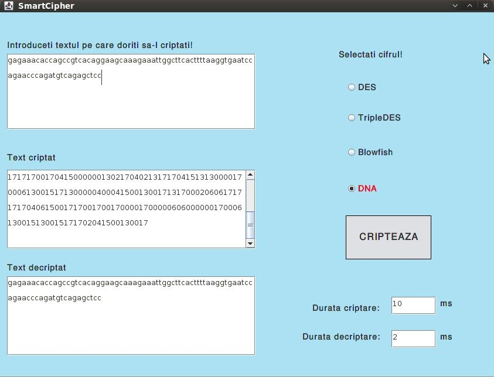

Data publicării: 08.11.2017
Autor articol: Mircea Vaida
1. Securitatea ADN- Implementare in mediul Java. Comparatii algoritmi.
Raportul precedent a facut o trecere in revista a notiunilor fundamentale folosite de securitatea ADN.
La baza implemntarilor in mediul Java au fost utilizate JCE (Java Cryptography Extension) și JCA (Java Cryptografy Archiecture) care definesc modul în care se poate dezvolta și integra un nou algoritm de criptare.
Generarea cheilor, cripatrea si decriptarea ADN proprie este descrisa de asemenea in raportul precedent folosind si diagrame UML. In continuare va fi descrisa partea de implementrae si integrare a cifrului precum si o comparatie a algoritmilor clasici si cel ADN referitor la procesul de criptare si decriptare descris anterior.
1.1 Implementarea și integrarea cifrului
Întregul cod a fost scris în limbajul Java. JCE (Java Cryptography Extension) și JCA (Java Cryptografy Archiecture) care au cunoscut evolutii odata cu noile variante Java SE, dar care pentru compatibilitate respecta mecanismul initial propus de Sun.
Conform indicațiilor oferite de către Oracle/Sun, în documentul intitulat How To Implement a Provider for the Java Cryptography Extension [9] , identificăm următorii pași:
- Scrierea codului care implementează serviciile dorite
- Alegerea unui nume pentru Provider
- Scrierea clasei principale, “Master class”, derivată din clasa Provider
- Compilarea Codului
- Prepararea pentru testare
- Scrierea și compilarea programelor de test
- Rularea programelor de test
- Documentarea Providerului și a serviciilor suportate de acesta
În scopul respectării cerințelor s-a procedat astfel:
1. Scrierea codului care implementează serviciile dorite
În acest stadiu, Providerul CryptoDNA suportă doar algoritmul de criptare ADN. Pentru a realiza implementarea acestuia, s-au creat clase derivate din clasele SPI corespunzătoare, respectiv din clasele CipherSpi și KeyGeneratorSpi. Acestea au implementat metodele abstracte ale căror nume încep cu cuvântul “engine”. Pentru optimizarea codului, s-au construit și o altă clasă care manipulează blocurile, precum și alte metode ( encryptBlock, decryptBlock etc) care sunt mai apoi apelate în cadrul metodelor engine.

2. Alegerea unui nume pentru Provider
Numele ales a fost CryptoDNA. El va fi folosit de către aplicațiile clienților pentru a se referi la acesta.
3. Scrierea clasei principale, “Master class”, derivată din clasa Provider
Cel de-al 3-lea pas este cel în care este creată o clasă derivată din clasa java.security.Provider.

Această clasă derivată este finală iar constructorul apelează super, specificând numele Providerului ales la pasul 2 și informații legate de provider și algoritmul suportat:
super (“CryptoDNA”, 2.0, “DNA Cryptography Provider”);
De asemenea, pentru fiecare serviciu implementat de către provider, trebuie să existe o proprietate a cărei nume reprezintă tipul de serviciu, urmat de un punct și de numele algoritmului căruia îi este aplicat serviciul. Proprietatea trebuie să specifice numele complet al clasei care implementează serviciul:
put(“KeyGenerator.DNA”, “dnaPack1.DNAKeyGenerator”);
put(“Cipher.DNA”, “dnaPack1.DNACipher”);
În cazul Cipher, numele algoritmului poate reprezenta o transformare și poate fi compusă din numele algoritmului, un mod particular și o schema de padding (dacă este cazul).
4. Compilarea Codului
Codul a fost compilat, rezultând fișierele de tip *.class.
5. Prepararea pentru testare
La acest pas, pentru a putea efectua orice fel de teste, inclusiv pe mașina locală, este necesar un certificat de semnare a codului. Certificatul valid 5 ani util atât pentru testare cât și pentru producție.
Pentru a obține un astfel de certificat trebuie procedat astfel:
a. Se folosește keytool pentru a genera o pereche de chei.
keytool -genkey -alias <alias> -keyalg DSA -keysize 1024
-dname “cn=<Company Name>,ou=Java Software Code Signing,
o=Sun Microsystems Inc”
-keystore <keystore file name>
-storepass <keystore password>
Acestea se scriu pe o singură linie. Rezultatul va constitui o pereche de chei DSA (o cheie publică și cheia privată pereche) stocată în keystore-ul specificat. Daca locul de stocare (keystore) nu există, el va fi creat.
b. Folosind keytool, se va genera o cerere pentru semnarea de certificat.
keytool -certreq -alias <alias> -sigalg DSA
-file <csr file name>
-keystore <keystore file name>
-storepass <keystore password>
Această comandă va genera un CSR (Certificate Signing Request), folosind formatul PKCS#1.
c. Se trimit prin email CSR și informațiile de contact la adresa javasoft-cert-request@sun.com.
d. După primirea email-ului, JCE Code Signing Certification Authority va trimite un număr de cerere prin email. Acest număr va trebui introdus într-un formular (10) care se va trimite la următoarea adresă :
Oracle/Sun Microsystems, Inc.
International Trade Services/Export Compliance
Attn: Encryption Export
4120 Network Circle MS: USCA12-204
Santa Clara, CA 95054
U.S.A.
După primirea certificatului, Providerul se va include într-o arhivă de tip JAR care va fi mai apoi semnată cu unealta jarsigner care va include și acest certificat.
Providerul va fi adăugat în lista de Providere, editând fișierul java.security astfel încât ultimul provider din listă va fi Providerul CryptoDNA:
security.provider.11=dnaPack1.Provider
6. În scopul testării s-a construit o clasa numită testADN. În cadrul acesteia se va instanția un obiect de tip Cipher, se va genera o cheie folosind clasa KeyGenerator, ambele primind ca argument string-ul “DNA” care reprezintă numele algoritmului.
7. S-au rulat programele de test.
Deoarece în urma efectuării pașilor necesari obținerii unui certificat de la Sun s-a primit un răspuns negativ, motivând lipsa resurselor necesare urmăririi unui astfel proiect realizat de un student, s-a dezvoltat acest Provider folosind OpenJDK . OpenJDK este un Java Development Kit gratuit, bazat pe cod open source, realizat prin eforturile Sun Microsystems. El oferă toate facilitățile oferite de platforma Java, de la versiunea JDK SE6.0, fără a impune restricții cu privire la folosirea Providerelor. Astfel, Providerul CryptoDNA a fost dezvoltat în OpenJDK, sub platforma Linux, distribuția Ubuntu.
S-au efectuat teste în scopul comparării timpului necesar criptării, respectiv decriptării în cazul diverselor cifruri, inclusiv folosind algoritmul de codare ADN. Secvența de test a fost:
TAACAGATTGATGATGCATGAAATGGGCCCATGAGTGGCTCCTAAAGCAGCTGCTTACAGATTGATGATGCATGAAATGGGGGGTGGCCAGGGGTGGGGGGTGAGACTGCAGAGAAAGGCAGGGCTGGTTCATAACAAGCTTTGTGCGTCCCAATATGACAGCTGAAGTTTTCCAGGGGCTGATGGTGAGCCAGTGAGGGTAAGTACACAGAACATCCTAGAGAAACCCTCATTCCTTAAAGATTAAAAATAAAGACTTGCTGTCTGTAAGGGATTGGATTATCCTATTTGAGAAATTCTGTTATCCAGAATGGCTTACCCCACAATGCTGAAAAGTGTGTACCGTAATCTCAAAGCAAGCTCCTCCTCAGACAGAGAAACACCAGCCGTCACAGGAAGCAAAGAAATTGGCTTCACTTTTAAGGTGAATCCAGAACCCAGATGTCAGAGCTCCAAGCACTTTGCTCTCAGCTCCACGCAGCTGCTTTAGGAGCCACTCATGAG
Testele s-au efectuat pe un sistem cu următoarele caracteristici:
Procesor Intel, OS: Ubuntu

Se poate constata faptul că cifrul ADN necesită un timp relativ mic pentru criptare dar un timp foarte mare, comparativ cu ceilalți algoritmi, pentru decriptare. Dintre cele 5 cifruri, cel care necesită cel mai scurt timp pentru criptare este Blowfish, iar pentru decriptare AES.
1.2 Integrarea Providerului într-o aplicație bazata pe un mecanism clasic de securizare
Aplicația SmartCipher este dezvoltată folosind limbajul Java, în OpenJDK, sub platforma Linux, distribuția Ubuntu. Ea reprezintă o unealtă folositoare pentru comparația dintre rezultatul criptării în cazul diverselor cifruri.
Interfața a fost creată folosind plug-in-ul pentru Eclipse Java IDE Jigloo GUI Builder, dezvoltat de către Cloud Garden. În cazul de față s-a utilizat varianta pentru uz necomercial care este gratuită.
Interfața conține un TextArea în care utilizatorul poate introduce textul pe care dorește să-l cripteze. Următorul pas este selecția cifrului. Disponibile sunt 4 cifruri: Des, TripleDes, Blowfish și DNA dintre care se poate alege unul folosind butonul radio corespunzător.
În urma apăsării butonului “Cripteaza” se vor afișa în celelalte două chenare textul criptat, respectiv textul după decriptare, precum și duratele necesare criptării și decriptării.



Se poate observa faptul că, datorită folosirii unei chei diferite la fiecare criptare, respectiv datorită mecanismul one-time-pad, rezultatul criptării va fi diferit de fiecare dată chiar dacă textul în clar rămâne neschimbat.
2. Concluzii si dezvoltări ulterioare
În practică, de cele mai multe ori, sunt folosiți, în combinație, atât algoritmii simetrici, cât și cei nesimetrici. Acest tip de criptare, este numit criptare hibridă,fiind foarte folosit datorită rapidității și protecției care sunt oferite în același timp.
Criptarea asimetrică are avantajul faptului că una dintre chei (cea de criptare) poate fi facută publică, fără a mai pune problema transmiterii unei singure chei care trebuie să rămână secretă. Aceasta cheie de criptare poate fi transmisă oricui, în timp ce cheia de decriptare este deținuta de cel ce a criptat, fiind denumită cheie privata. Un alt avantaj al cheilor asimetrice asigurearea identității. Dacă o persoana X criptează un mesaj I cu cheia lui privată, îl transmite unei persoane Y și aceasta îl poate decripta cu cheia publica primită, putem spune că Y are certitudinea că mesajul provine de la X.
Criptarea simetrică are avantajul vitezei, fiind foarte utilă în cazul criptării fișierelor locale.
Combinând avantajele celor două tipuri de algoritmi, rapiditatea și protecția, propun un protocol de criptare hibridă care funcționează astfel:
Criptarea mesajului
- Generarea cheii simetrice K, folosind algoritmul ADN de criptare simetrică
Generearea perechii formată dintr-o cheie publică și una privată folosind algoritmul ADN de criptare asimetrică propus de către Tatiana Hodorogea și Mircea Florin Vaida în articolul “Blood Analysis as Biometric Selection of Public Keys ” [8]
- Criptarea mesajului M cu cheia simetrică și obținerea mesajul M*
- Preluarea cheii publice
- Criptarea cheii simetrice cu cheia publica și obtinerea lui K*
- Transmiterea perechii {K*,M*}
Decriptarea mesajului
- Recepționarea mesajului {K*,M*} și separarea celor două câmpuri
- Decriptarea lui K* cu ajutorul cheii private proprii, pentru obținerea cheii K
- Decriptarea lui M* cu K pentru obținerea mesajului original M
In cadrul acestui raport s-a urmarit construirea unui nou algoritm de criptare, precum și evaluarea acestuia în comparație cu alți algoritmi similari. Încadrând acest algoritm în categoria algoritmilor simetrici, am putut face o comparație a timpului necesar criptării, respectiv decriptării, cu alți algoritmi simetrici precum DES, TripleDES, Blowfish și AES.
Cifrul face o prelucrare pe blocuri a textului în clar, fiecărui bloc fiindu-i aplicată o cheie secretă. O particularitate a acestui algoritm o reprezintă dubla criptare. Pentru a obține un cifru mai puternic s-au folosit doi algoritmi clasici de criptare: substituția și one-time-pad.
Pentru a putea implementa acest cifru s-au construit următoarele clase:
- BlockCipher – efectuează împărțirea informației în blocuri de o dimensiune prestabilită
- DNAKeyGenerator – generează o cheie alcătuită dintr-un șir de octeți aleatori folosind clasa SecureRandom, pe care apoi o traduce conform alfabetului ADN
- DNAKey – clasa care returnează cheia generată cu clasa DNAKeyGenerator
- DNACipher – aplică regulile de criptare, respectiv decriptare
- Provider – un “Master Class” care coordonează modul în care serviciile criptografice sunt văzute în interiorul acestui Provider de securitate
- Prima prelucrare, respectiv prima criptare, transformă textul în clar într-un text tradus în limbaj ADN după următorul tabel:
| A – CGA | L – TGC | W – CCG | 3 – GAC |
| B – CCA | M – TCC | X – CTA | 4 – GAG |
| C – GTT | N – TCT | Y – AAA | 5 – AGA |
| D – TTG | O – GGA | Z – CTT | 6 – TTA |
| E – GGC | P – GTG | _ – ATA | 7 – ACA |
| F – GGT | Q – AAC | , – TCG | 8 – AGG |
| G – TTT | R – TCA | . – GAT | 9 – GCG |
| H – CGC | S – ACG | : – GCT | space – CCC |
| I – ATG | T – TTC | 0 – ACT | |
| J – AGT | U – CTG | 1 – ACC | |
| K – AAG | V – CCT | 2 – TAG |
Tabel 2 Tabel de conversie ADN
De menționat este faptul că prelucrările se fac doar pe minuscule, majusculele fiind introduse în tabel doar pentru o mai bună evidențiere a transformărilor.
Textul secret, acum tradus în limbaj ADN urmează să fie supus unei operații SAU-EXCLUSIV cu o cheie unică, și aceasta fiind formată dintr-o succesiune aleatoare de litere ale alfabetului ADN (a, c, g, t).
Decriptarea presupune o nouă operație SAU-EXCLUSIV între textul criptat și cheia secretă pe care doar destinatarul o are și o reconversie din limbaj ADN în limbajul în care a fost scris textul inițial.
Evoluția domeniului IT și necesitatea tot mai crescută a unor aplicații sigure conduc la apariția tot mai multor tehnici de garantare a securității. În prezent sunt folosite diverse modele clasice bazate preponderent pe algoritmi matematici complecși. Biotehnologiile, implicit metodele bazate pe informația ADN, reprezintă modele care pot constitui importante direcții în cercetare.
Acest algoritm poate fi optimizat având în vedere următoarele:
- În urma unui studiu aprofundat al structurii ADN se poate modifica algoritmul astfel încât să existe un grad cât mai apropiat de maxim de asemănare între acest model și modelul ADN-ului uman.
- Obținerea unui certificat de la SUN/Oracle pentru a o putea integra în JCE și a o putea folosi sub orice sistem de operare (Distribuțiile noi de Linux au integrat OpenJDK, neexistând o versiune care se poate folosi sub Windows).
- Folosirea acestui algoritm în cazul aplicațiilor medicale ce trebuie să asigure confidențialitate, respectiv în cazul schimbului de informații între medici și între medici și pacienți.
Odata cu dezvoltarea tehnologiilor, inclusiv a celor mobile, tari care erau relativ ramase in urma in ceea ce priveste cercetarea in domeniul securitatii investesc fonduri din ce in ce mai mari pentru a oferi produse sigure pe piata.
Uniunea Europeana are o strategie prin care impune ca toate produsele software dezvoltate pe piata comuna sa respecte standarde de securitate stabilite prin norme obligatorii.
Bibliografie
- T. Băjenescu, M. Borda. Securitatea în informatică și telecomunicații. Cluj-Napoca : Dacia, 2001.
- DotNetSlackers. An inside look at Symmetric Encryption. DotNetSlackers. http://dotnetslackers.com/articles/security/AnInsideLookAtSymmetricEncryption.aspx.
- Lucks, Stefan. Attacking Triple Encryption. London : Springer-Verlag, 1998, Lecture Notes In Computer Science, Vol. 1372.
- NIST. Specification for the Advanced Encryption Standart. Computer Security Resource Center. http://www.csrc.nist.gov/publications/fips/fips197/fips-197.pdf.
- Description of a New Variable-Length Key, 64-Bit Block Cipher (Blowfish). Schneier, Bruce. s.l. : Springer-Verlag, 1994, Fast Software Encryption, Cambridge Security Workshop Proceedings (December 1993).
- Savard, John. IDEA (International Data Encryption Algorithm). [Interactiv] http://www.quadibloc.com/crypto/co040302.htm.
- Genetics Home Reference. [Interactiv] U.S. National Library of Medicine. http://ghr.nlm.nih.gov/handbook/basics/dna.
- Tatiana Hodorogea, Mircea-Florin Vaida, BLOOD ANALYSIS AS BIOMETRIC SELECTION OF PUBLIC KEYS, 7 th International Carpathian Control Conference ICCC’2006, Ostrava – Beskydy, Czech Republic, May 29-31, 2006, pp. 675-678
- How to Implement a Provider for the JavaTM Cryptography Extension. Sun Microsystems. http://java.sun.com/j2se/1.4.2/docs/guide/security/jce/HowToImplAJCEProvider.html.
- Microsystems, Sun. Developer Resources for Java Technology. Certification Form for CSPs. http://java.sun.com/j2se/1.4.2/docs/guide/security/jce/CertForm.txt.
- A Brief History of Cryptography. Cypher Research Laboratories Pty. Ltd. http://www.cypher.com.au/crypto_history.htm.
- Java Cryptography Architecture. [Interactiv] Sun Microsystems. http://java.sun.com/j2se/1.4.2/docs/guide/security/CryptoSpec.html.
- Andreica, Alina. Internet Teorie. Facultatea de Studii Europene, Universitatea Babes-Bolyai Cluj-Napoca. http://www.euro.ubbcluj.ro/~alina/cursuri/internet-teorie/.
- Ashish Gehani, Thomas LaBean, John Reif. DNA-Based Cryptography. s.l. : DIMACS Series in Discrete Mathematics and Theoretical Computer Science, 1999, Vol. 54.
- DNA Alphabet. VSNS BioComputing Division. http://www.techfak.uni-bielefeld.de/bcd/Curric/PrwAli/node7.html#SECTION00071000000000000000.
- Hook, David. Beginning Cryptography with Java. s.l. : Wrox Press, 2005.
- Knudsen, Jonathan B. Java Cryptography. s.l. : O’Reilly, 1998.
- Wagner, Neal R. The Laws of Cryptography with Java Code. [PDF] 2003.
- Web Architecture. [Interactiv] School of Information, UC Berkeley. http://dret.net/lectures/web-fall08/.
- Cloud Garden – Jigloo GUI Builder. Cloud Garden (Java Resources), Cloud Garden. http://www.cloudgarden.com/jigloo/.
- Konheim, Alan G. Computer Security and Cryptography. New Jersey: John Wiley & Sons, Inc., 2007.
- Hodorogea Tatiana, Vaida Mircea-Florin, COMPLEXITY OF DNA ENCRYPTION SYSTEM AS A SUBSET OF JAVA CRYPTOGRAPHY EXTENSION, IASTED International Conference on Biomedical Engineering (BioMed 2008), 13-15 Feb., Innsbruck, Austria, paper 601-167, pp. 19-24
- Mircea-F. Vaida, Alexandra Vanea, Radu Terec, Raport tehnic privind Securitatea alternativa folosind mediul Java, RTH 09005, septembrie 2009, Laborator Helios, Director Mircea-Florin Vaida, Univ. Tehnica din Cluj-Napoca, ISSN: 1453-875X, pp. 82, ISSN 1454-0665
- Olga Tornea, Monica Borda, Tatiana Hodorogea, Mircea-Florin Vaida, ENCRYPTION SYSTEM WITH INDEXING DNA CHROMOSOMES CRYPTOGRAPHIC ALGORITHM, IASTED International Conference on Biomedical Engineering (BioMed 2010), 15-18 Feb., Innsbruck, Austria, paper 680-099, pp. 12-15